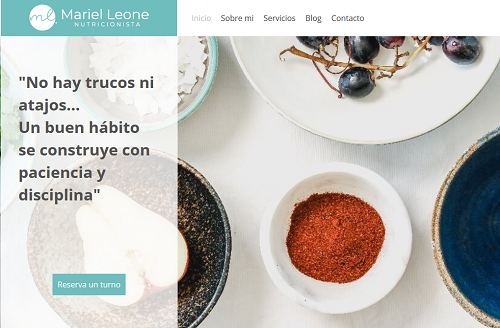
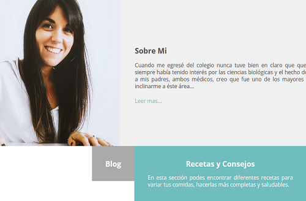
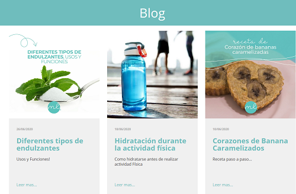

Licenciada Mariel Leone
Cuando Mariel me contacto, creo que conectamos de inmediato, la idea que me planteo me parecio un gran desafio. El poder desarrollarlo, tal cual lo indicaba ella con todos los detalles desde colores hasta tener un Blog de entradas autoadministrable (sin tener conocimientos de manejo de PC).
Mariel es Licenciada en Nutricion, actualmente esta haciendo muchos estudios sobre el deporte, ademas de ser muy joven es muy influyente en la redes y en la ciudad de Rosario, es Nutricionista del plantel de Rosario Central de Fubtol Juvenil, y una persona muy influyente en sus redes.